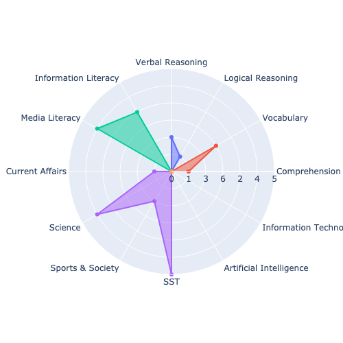

21st Century skills
olympiad Report
School Name
19th June 2021


Performance across different
Skills and sub-skills
Digital Literacy |  | Critical Thinking |
General Knowledge | Communication |
|
Technology Aptitude |
The Circular Skill Profile represents your performance on each core skill in each subject test of Future edge Olympiad. The outer circle represents 100%. The section between two axes represents a core subskill in a skill, and the shaded region plots your performance on the skill. The greater the radius of shaded section, the better the performance.
Critical Thinking: Ability to analyze facts to form a judgment
- Verbal Reasoning: Ability to comprehend and reason using concepts expressed through language.
- Logical Reasoning:Rational and critical way of thinking and problem-solving.
Digital Literacy:Ability to find, evaluate, and clearly communicate information on digital platforms
- Media Literacy:Ability to access, critically evaluate, and create or manipulate media.
- Information Literacy:Ability to find, evaluate, organize, use, and communicate information in all its various formats
Communication:Ability you use when giving and receiving different kinds of information
- Comprehension:Ability to process text, understand its meaning, and to integrate with what the reader already knows
- Vocabulary:Ability to understand words and communicate effectively.
General Knowledge:Knowledge about many different things, as opposed to detailed knowledge about one particular subject
- Social Studies:Knowledge about social science and the humanities, including history, geography, and political science.
- Sports & Society:Knowledge about Sports and Society.
- Science:Knowledge and understanding of the natural and social world.
- Current Affairs:Awareness of local and global affairs happening.
Technology Aptitude:Ability to possess a high intellect in electronics and technology
- Information Technology:Techniques, skills, methods, and processes used in the production of goods or services.
- Artificial Intelligence:Understanding of intelligence demonstrated by machines.
School Name
Number of Participants